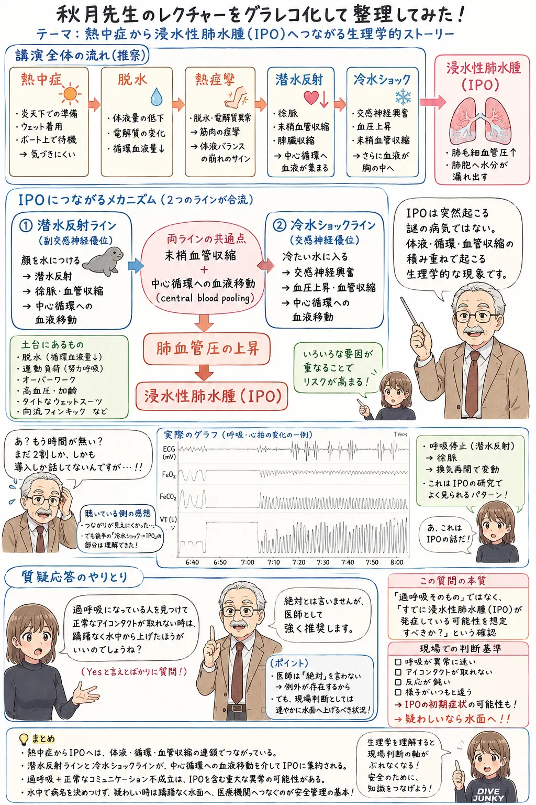

The road Orz passed by 2026 年 05 月
05 月 30 日 ( 土 )
Dive #161 ブルーオーシャンフェス 2026 に行ってきた
石切生喜病院 救急集中治療科部長、救急医療科センター長 秋月勝彦先生の講演を聴きたくて、ブルーオーシャンフェス 2026 に行ってきました。
鶴見緑地公園はどれだけぶりでしょうか。まだ娘が幼かった頃なので、もう 30 年近く前になる気がします。

最初はどなたが、どのような話をするのかも知らずにでかけたですが、DAN Japan のステージということで、潜水関連障害の話であろうと思ってでかけました。
登壇は大阪では減圧症の高圧酸素治療の第一人者とも言える秋月先生でした。先生が演者であることがわかった時点で、やはり減圧症のお話なのかな？と思っていたのですが違いました。
最初は熱中症のお話が延々と続きます。まぁダイバーも熱中症は無縁ではないので、そういったお話なのかな？と拝聴していると、もうあまり時間が残っていないとのこと。
先生が「え？もうあまり時間が残ってない？まだ全体の２割くらいで、しかもまだ導入部分なんだけど」とおっしゃる。講演あるあるなので、ぼくはそこでクスッと笑ってしまいます。
そして先生が熱中症の話から潜水反射の話に移行され、さらに冷水ショックの話をし始めて、図中の VT (一回換気量) のグラフをPowerPoint で表示された瞬間に、今回の話は浸水性肺水腫 (IPE) の話だったことをぼくは理解します。
冷水ショックで何が起きるのかと言うと、心拍数と心拍の強度が激増します。すると肺胞を取り巻く毛細血管の内部圧が激増します。すると毛細血管内の血漿が肺胞内に染み出していきます。
その結果、肺胞内が血漿に満たされてしまい、肺胞でガス交換ができなくなってしまいます。
これが急性疾患である浸水性肺水腫の病態です。
つまり秋月先生は肺胞を取り巻く毛細血管の内圧が高まる仕組みをいくつか説明されてこられたというか説明されようとしたのですね。時間が押していて話が飛び飛びになって見えにくかったということはありますけれど。
できればあと 2、3 時間はお話を聴いていたいなとは思いました。やはりあの内容で 1 時間は短すぎます。
最後の質疑応答で時間がないにもかかわらず、ぼくの質問にも答えていただけました。ぼくの「もし過呼吸状態のゲストまたはバディに気づいてアイコンタクトを取ろうとしたものの、アイコンタクトが成立せずに異常を感じた場合は、即時浮上させたほうがよいのですよね？」という質問にも、ぼくの表情から質問の趣旨を瞬時に理解していただけたのか「絶対とは言えませんが、医師としては強く推奨します」との回答をいただけました。
ぼくの頭の中では、そのような状態のダイバーがいたら即時に浮上開始、場合によっては安全停止のスキップ、ボートにあげてからの座位での酸素吸入、心肺停止状態になった場合の CPR の実施、救急車の手配、などがぐるぐる回っていました。
こういったことはインストラクター、ダイブマスター、アシスタント・インストラクターだからではなく、すべてのダイバーが想定して準備しておかねばならない、ぼくはそう思います。
バイスタンダーがどのように判断して、どのようなプロトコルで行動するのかは、発症者の予後を大きく左右するとしか思えないので。
- Category :
- #Records of Orz's Road
- #ダイビング
- #スクーバダイビング
- #スキンダイビング
- #スノーケリング
- #浸水性肺水腫
- #浸漬性肺水腫
- #水泳誘発性肺水腫
- #IPE
- #IPO
- #SIPE